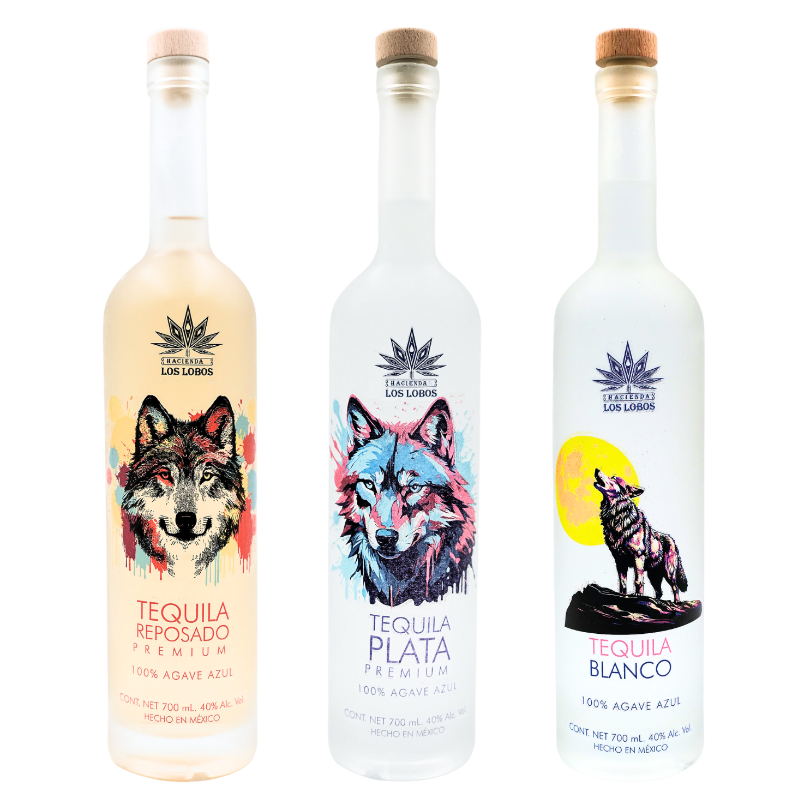
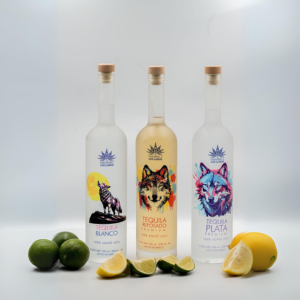
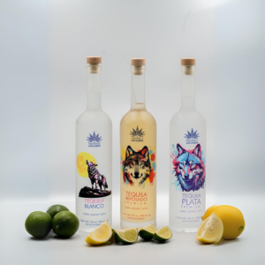
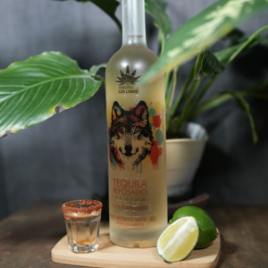
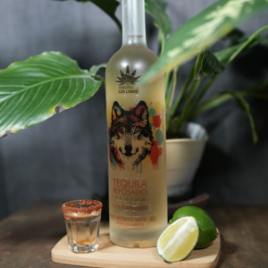

HACIENDA LOS LOBOS


Hace algunos años durante un viaje que hicimos entre colinas y montañas en Jalisco, México, tuvimos la oportunidad de conocer la cultura del tequila. Conocimos el trabajo de los productores que mantienen la más pura esencia del destilado tradicional y su respetuosa adaptación a prácticas de cuidado del medio ambiente, lo que nos hizo maravillarnos y entender el motivo de porqué es la bebida mexicana más reconocida globalmente.
Tequila Hacienda Los Lobos se creó en honor a la cultura, no sólo del tequila en Jalisco, sino a la de todos los grupos humanos en el mundo que conservan y mejoran lo bueno que hemos descubierto a lo largo de nuestra historia como especie.
Nos complace poder compartir con las personas de todo el mundo, el nítido y variado matiz de sabores que brinda nuestra bebida cuidadosamente preparada y de la cual estamos profundamente enamorados.


Nuestros Tequilas son 100 % puros de agave tipo Weber-Azul Tequilana. En promedio se utilizan 6 kg de agaves para destilar un litro de tequila 100% puro.
Este tequila es considerado el más puro debido a que el contacto que tiene con la madera de los alambiques es mínimo.
Tiene color transparente porque el líquido debe pasar por dos cuidadosos procesos de destilación, lo que hace que Tequila Hacienda los Lobos tenga uno de los mejores tequilas blancos en el mundo.

Nuestro Tequila Reposado ofrece un sabor intenso, refleja fielmente el sabor del elixir de agave reposado en barricas de roble blanco.
El Origen nuestro Tequila Reposado proviene de agave weber azul cosechado en Jalisco. Presenta un color dorado o de oro pálido. En cuanto a su aroma y sabor, se destacan claras notas frutales y herbales, con matices de vainilla. Al probarlo, se confirma su gran personalidad; las frutas, las notas herbales y los toques dulces como la vainilla permanecen en boca. Es perfecto para disfrutar solo o acompañado.
Tequila Plata es un destilado cristalino y brillante, hecho de Agave Weber azul de Jalisco. Tiene un aroma que combina notas frutales, miel de agave cocido, toques cítricos, y sutiles notas florales y herbales. Reposado por 15 a 45 días, mantiene su frescura y sabor herbal, ofreciendo una experiencia suave y pura que refleja la esencia del agave maduro.
La coctelería desarrollada exclusivamente para el Tequila Hacienda Los Lobos reviste la presencia de nuestros productos en los eventos a los que asistimos. Hacemos experiencias inolvidables para las personas que participan en exposiciones, competencias gamer, conciertos y todo tipo de eventos.
En 2022 patrocinamos con gran éxito el VIP Lounge del primer GAMERGY en México, la exposición internacional más importante de la industria de videojuegos en Europa y América Latina.
Nuestra marca no es sólo un Tequila, también respaldamos a nuestros clientes y consumidores con experiencias que enriquecen la convivencia y el buen ánimo en los eventos donde participamos.
Parece que no eres mayor de 18 años
Entrar y aceptar
Los términos y condiciones de la página web de tequila establecen que el uso de la plataforma implica la aceptación de las políticas y normas establecidas. Se prohíbe el acceso no autorizado a la página, así como el uso inadecuado o ilegal del contenido y materiales presentes en la misma. El usuario se compromete a no utilizar la página para fines comerciales o publicitarios sin previa autorización. Además, la página no se hace responsable de los daños o perjuicios derivados del mal uso o acceso a la plataforma. El usuario reconoce y acepta que toda la información y contenido presente en la página web está protegido por derechos de autor y propiedad intelectual, y se compromete a respetar estos derechos en todo momento.
Una nueva generación de Tequila


 

 
